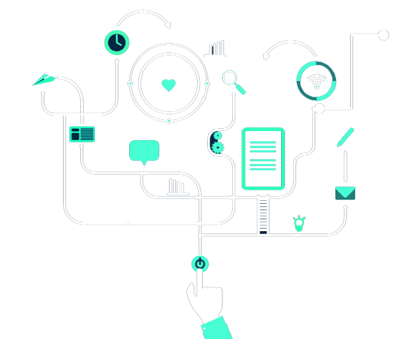

Cybersecurity Ethics (Ethical Hacking)
In our current modern day technology, cybersecurity ethics are inadequate. Many businesses lack
awareness among the computer security community. This causes their practices to go unguided and
have a clear potential for significant harm to many users. Clear codes of conduct must be seen in in a
professional community.
Requirements Outlined:
-Technology/Topic Selection.
-Critically review the opportunities for Society presented by the Technology/Topic.
-Provide a critical assessment of the risks posed by the technology/topic.
-Provide a critical assessment of the choices available when adopting the technology/topic.
-Reflect on and evaluate the ethical issues arising from the Technology/Topic.
-Present Technology/Topic through a scholarly resource.
Made 27 May 2021
by Rahul Shivanarthi.